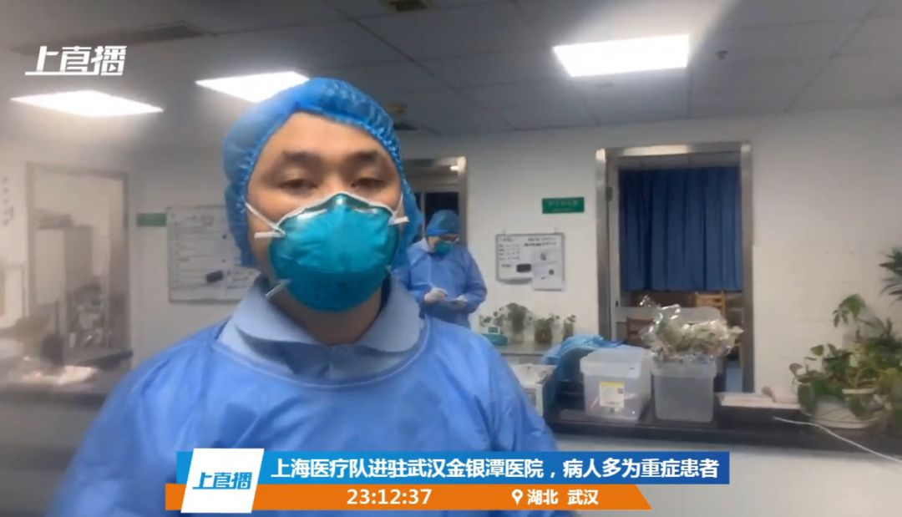

医护人员用文件袋自制护目镜——湖北县镇乡村防疫战
原文链接 备份链接 医疗防护资源不足是常态，各地资源调配需平衡，“灯下黑”区域渐次光亮，但少数地区的疫情宣传依旧不到位 外地务工返乡者最担忧的问题是年后经济收入断流、地域歧视，担心节后可能无法返工 本文首发于南方人物周刊 文 | 本刊记 …


支援武汉的医护人员已上千，地方900多人，军队450人，随后将再派1600多人。
武汉医护人员身心俱疲，难以应对不断增长的病例和民众的恐慌。
外援的到来，缓解了他们的负担。不少援汉医护人员感到，仅从肺炎诊治难度而言，并没有想象中可怕。
接下来武汉之外的疫情更让人担心，很多地方物资与人员更是紧缺，技术能力也比武汉差很多。

“武汉，到了，雨，寒风凛冽。”广州医科大学附属第一医院心血管内科主任医师陈爱兰大年初一（1月25日）在她的朋友圈中记录。
同一天，来自上海一家医院重症科护士黄燕（化名），在抵达武汉之后，为了第二天工作不碍事，剪去了自己的长发。
她们都是第一批支援武汉的医疗救治队成员，目前抵达武汉的已经1300多人。
武汉医务人员和医疗物资的紧缺，难以应对不断增长的病例，和裹挟在各种恐慌情绪中，大量涌入大医院的患者以及家属。除夕夜（24日），一位医生在朋友圈说：“我们已经顶不住了，门诊挤满了病人，24小时都满满的……我们的防护用具也已经用光了，防护服、口罩、……都用完了”。
外援医生们的到来，犹如一场及时雨，缓解了他们的负担。昨天下午国新办的发布会上，卫健委主任马晓伟介绍，武汉新开放了2400张床位，未来三天，武汉还有可能开放近5000张床位。医疗资源紧张、住不进去院的情况将会有所缓解。
对于疫情，一位上海支援医护人员对八点健闻说，重症患者的病情比想象的要严重，但轻症患者的治疗难度并不大，大部分可以治愈。
上海市浦南医院呼吸科主任赵云峰说，目前上海医疗队是按照国家卫健委1月23日发布的第三版新型冠状病毒诊疗指南来实施具体的治疗工作。“其实目前没有特效抗病毒药物，基本上就是对症治疗，积极防治并发症，提高免疫力。有些病人免疫功能逐渐恢复，病毒的毒性逐渐下降，慢慢也就康复了。”
上海市医疗救治专家组组长、华山医院感染科主任张文宏在他的文章中分析：通过对所有发病患者的收治，不出2周，武汉实报病例应该能出现拐点。
上千名医护人员支援武汉
国家卫健委主任马晓伟在昨天下午的新闻发布会上说，已经派出7支900多人的医疗救治队伍驰援武汉，军队派出了450人的医疗队，随后还将再派出12支1600多人的队伍。
最早出发的是军医。1月24日除夕夜，上海大雨。在万家灯火团圆之时，上海第二军医大学（海军）150名医护人员集结完毕，在夜幕中乘坐空军包机直飞武汉。陆军军医大学、空军军医大学医疗队则分别从重庆、西安抵达武汉。从24日凌晨接到援助通知到医疗队伍完成抽组，陆军军医大学仅用了6小时。这些军医医疗队中，不少曾执行过抗击非典、抗震救灾、援非抗埃等重大任务。
与此同时，空军航空兵某师派出3架军用运输机，连夜分赴上海、西安、重庆执行医疗队员和医疗物资器材紧急空运任务。
紧随其后，1月25日凌晨，上海医疗队抵达武汉，他们来自该市52家不同医院，共136人，包括呼吸科、感染性疾病科、医院感染管理科、重症医学科和护理部门等。上海医疗队的工作重点一是帮助金银潭医院扩建ICU病房，二是进入医院已有病区支援。
广东医疗队128人也于凌晨2点到达。医疗队将对口援助武汉市汉口医院，接管武汉市汉口医院2个病区。下午，浙江医疗队135人抵达；晚上，四川医疗队138人抵达，对武汉红十字会医院进行支援。此外，江苏、湖南、山东等省也迅速组建医疗队，前往武汉市金银潭医院、汉口医院、武昌医院等定点医院，开展救援。
陈爱兰抵达武汉当日上午的工作会议部署了具体的任务，下午包括她在内的第一批抵达的医生们进行了最严格的防护措施和要求训练。26日深夜，她写道“又是凌晨，希望后面按部就班，顺利运作，平安健康每一天。”
目前没有好的药物，
但绝大部分患者可被治愈
剪去了长发的黄燕，未来一段日子都要守着金银潭医院。这里是此次肺炎疫情最初的定点医院，上海的救援医疗队接管了两层病区，其中二楼收治30名轻症患者，三楼收治了27名重症患者。
在澎湃拍摄的一段视频中，金银潭医院的医护人员向上海医疗队的医护人员交接时说：“病人比你们想象的情况要重一点。”“哪个病房的病人最重？”“都很重”。

△ 1月26日，上海援鄂医疗队第六人民医院重症医学科副主任医师汪伟在金银潭医院值首个夜班。来源：澎湃新闻
上海第一人民医院呼吸与危重症医学科周新教授曾抢救了上海第一例SARS病人，他对澎湃新闻表示，武汉的医疗条件比想象的要简易，但比非典时期好。
一位组织医生救治队的四川某医院管理层表示，派出的医护人员心态都比较好，仅从此次肺炎诊治难度而言，并没有想象可怕。
武汉大学中南医院重症医学科主任彭志勇在接受采访时说：“虽然目前没有好的药物治疗，但70%患者都很轻微，绝大部分可被治愈”。他所在的病区，单独隔离出了一个ICU病区，设置了16张病床，收治重症肺炎患者。“16张病床，永远都是满的，出来一个，马上又有一个病人要进来，基本上每天都有两三个病人能够转到轻微的病房去。”
中国疾控中心（CDC）流行病学首席科学家曾光也说，死亡率是传染病中的关键指标，仅从当前的死亡率看，此次新型冠状病毒肺炎不如SARS严重。根据临床观察，最终使用激素的危重病例很少。而当年SARS时期，很多患者后期都需要呼吸机和插管，这次并没有。
医护人员面临更大的挑战，还是当地人群的焦虑。
大众的恐慌已超过疾病的严重程度
张文宏的文章中，引用了中国著名的病毒学家闻玉梅院士对疫情的的看法，她说“现在全国一片恐慌，但防疫有其自身规律，目前需要的是理性科学对待。早期武汉疫情是盲目乐观，现在过度恐慌，反而不能科学对待眼前的疫情”。
一位武汉协和的外科医生，1月25日在文章《武汉一医生的心声》中谈及目前各种谣言漫天飞，“日均要在微信上辟谣20次以上，原因是大众的恐慌已远远大过疾病的严重程度，反思“因为这次疾病症状比较轻，所以一开始大家并没有重视”；但是同样因为症状比较轻，呼吁大家“不要过于恐慌”。
恐慌来自小道消息铺天盖地：“在武汉上空开始播撒消毒粉液”、“武汉卫健委领导感染后逃往上海”、“武汉断油”……尤其是封城以后，城中之人害怕自己是下一个“中招者”，一有感冒发烧症状，就纷纷涌向医院。
谣言引发焦虑。在武汉市，疑似患者的诊断滞后，更加剧了这种焦虑，并导致医院里的人潮滞留，加剧医护人员的情绪崩溃。大量发烧，肺部CT显示疑似肺炎的疑似患者，在过去的一周里面临着医疗资源有限，得不到医院及时收治的尴尬处境。更加剧恐慌情绪的是，作为最好的确诊方式，病毒检测并不那么容易获得，所以人们难以判定自己究竟是普通的流感，还是新型冠状病毒的感染者。
通常而言，病原检测至多不过一天。一位到上海某三甲医院就诊的患者，其时间节点大致如此：第一天深夜到医院急诊，根据从武汉抵沪、发烧及肺部CT结果，确定为疑似病例，在院内进行隔离治疗。这个阶段主要是开具退烧药和抗病毒的达菲。第二天上午，疾控中心到院内采样，带回疾控中心实验室进行检测分析。阳性结果是第二天晚上九点左右得到。第三天，疾控中心把患者从医院带到全市集中的隔离医院，类似“小汤山模式”，确诊患者在这里统一治疗。
但这样的流程在武汉目前做不到。财新记录过一位患者家属的经历：吴先生要求武汉红十字会医院给父亲做病毒检测，被告知医院没有测试病毒的试剂盒，不能做检测。“不能检测，就不能确诊，不能确诊就很难住院。不能住院，就没办法检测。我们就一直在这个怪圈里绕不出来。这个发热门诊和我父亲一样遭遇的人有很多。”
在1月23日晚间央视的《新闻1+1》节目上，主持人白岩松介绍了一线信息，其中也提到了同样的问题——收治的病人无法进行及时的病原检测，导致院内交叉感染存在。
正如《武汉一医生的心声》中说，“这个时候你如果发烧了想来医院， 会发现你量个体温，前面有一百个人在排队，查个血又有一百个人，去做个CT又有一百个人……在等待的过程中，你会加重焦虑感和不安，最可怕的是，你很可能稀里糊涂的就真的被传染到！”
目前，武汉的医院正在疏通此前滞留的患者人群。同时，武汉从1月26日开始，已启动从社区层面的疫情排查，挨家挨户摸清情况，做好人群的居家隔离，避免过多的人群再继续涌入大医院。
医生们也提到，目前有一个特殊的情况，就是虽然发热门诊人满为患，但病房并没有住满。一个原因可能是，此前有多名武汉医生院内交叉感染，有些在隔离，有些在住院，“医生不够，没有那么多人干活，就不能往（病房）里塞病人。”此外，物资匮乏也让武汉医生不敢再收病人进来。
疫情进入第二阶段，
接下去最大挑战来自武汉之外
医护人员支援武汉的同时，物资也正在支援。
武汉当前的医疗物资是很匮乏的，一位医生说，他们的防护设备只有500套，加上随队带去的物资，大概能用两、三天。但是他听说两天左右防护用品紧缺的情况可能会改善，因为捐赠的物资会陆续到位。
一位从武汉调任湖北某地市的卫生干部告诉八点健闻，随着医疗外援与物资的到位，他一点都不担心武汉的疫情会明显改善，更令人担心的是武汉之外。过去两天内，自己只睡了三个多小时，因为非常担心所在的地市会出现更多的疫情。据他所知，武汉封城之前，连夜跑了30万人，很多就是散落在湖北各地。
他所在的地市，24日确诊8人，25日确诊人数上升至21人。“增长还是很快，不乐观，湖北其他城市也差不多。”在这些地方，物资与人员更是紧缺，技术能力也比武汉差很多。他所在的地市已经通过社区向下派人做疫情排查，但是技术实力是个大问题。
黄冈下属县人民医院的一位医生说，自1月19日起，那里的发热门诊人手完全不够，机器也累，人也累。呼吸内科病人太多，内分泌科、肿瘤科等等的医生都来帮忙分诊，“都没有防护，只有帽子、口罩。”医院四楼的感染科几乎已经住满了重症病人。黄冈是武汉之外比较重灾的地方，原因是黄冈人在武汉打工的特别多，更容易出现输入性病例。
1月26日下午，卫健委主任马晓伟在新闻发布会上也提到，从近期的临床资料来看，病毒的传播力有所增强，疫情传播速度还比较快。“现在疫情进入了一个比较严峻而复杂的时候，处于防控关键时期。”尤其困扰的是，从病人早期症状来看，体温往往不高或者正常，轻症病例较多，呈隐形感染的特点，因而行走的传染源大大增强了防控的难度。
上海市医疗救治专家组组长张文宏的文章中分析，出现人传人之后的二代病例与三代病例，就标志着疫情进入了第二阶段，武汉乃至整个湖北出现病例数飙升实属意料之中。接着最大的挑战就是各地的输入性病例。其中的核心防治策略就是当地政府严格按照流程诚实的实施疫情管理，对所有潜在的输入性病例进行迅速有效的筛检，这个阶段怎么投入都不会白费。“抗击新型冠状病毒，到了目前这个阶段，比的已不仅仅是勇气，而是理性、耐心与科学了。”
今早，国家卫健委发布最新疫情通报：截至1月26日24时，国家卫健委收到30个省（区、市）累计报告新冠状病毒肺炎确诊病例2744例（26日新增769例），现有重症病例461例，累计死亡病例80例，累计治愈出院51例。现有疑似病例5794例。
其中，湖北累计确诊1423例，武汉累计698例。1月26日晚间，武汉市长周先旺在湖北政府新闻发布会上表示，武汉确诊病例可能再增加约1000例。
吴晔婷 谭卓曌 季敏华|撰稿
王吉陆|责编

识别二维码
查看新型冠状病毒疫情跟踪


我们尊重原创版权，未经允许请勿转载。
授权转载
郑琪 微信号: 1281949389
商务合作
上海：leslee 13916263824
北京：Jessie 13911125922
线索爆料、意见反馈，加入核心读者社群
请扫码联系健闻君

让朋友们看到你也在看
↓↓↓
原文链接 备份链接 医疗防护资源不足是常态，各地资源调配需平衡，“灯下黑”区域渐次光亮，但少数地区的疫情宣传依旧不到位 外地务工返乡者最担忧的问题是年后经济收入断流、地域歧视，担心节后可能无法返工 本文首发于南方人物周刊 文 | 本刊记 …
原文链接 备份链接 我们做好了奋战半年的打算 武汉大学中南医院重症医学科的护理人员。本刊记者/周群峰 摄 1月25日，大年初一，“封城”下的武汉，小雨绵绵，路上人车稀少。但武汉大学中南医院重症医学科（ICU）的医护人员们无暇过年，依旧忙着 …
原文链接 备份链接 17 年前的那场公共卫生危机，未能及时公开疫情成为事后被诟病最多的问题之一，也成为中国疾病防控系统以及政府信息公开等许多方面的重要转折点。 而多年后，越来越多的互联网官方渠道成为了重大事件的定海神针，「官宣」被普遍接 …
原文链接 备份链接 特约撰稿 李梦琪 本报记者 郭阳琛 石英婧 上海报道 “我比很多同事都幸运，除夕是在家过的。”已经在抗击疫情一线连续奋战了二十多天，除夕夜能和家人在一起度过让武汉市肺科医院隔离病区护士吴青（化名）格外欣慰。 由于武汉疫 …
原文链接 备份链接 武汉抗“疫”27日考：追忆那些被贻误的宝贵时机 2020-01-26 20:28 作者：张家振 来源：中国经营网 本报记者 张家振 武汉报道 （武汉抗“疫”一线的逆行者。） 1月24日，除夕夜。39岁的张琴（化名）和丈 …